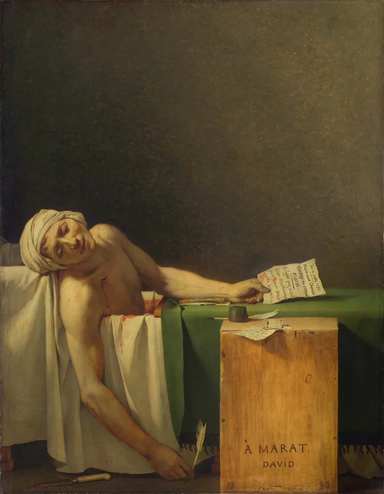
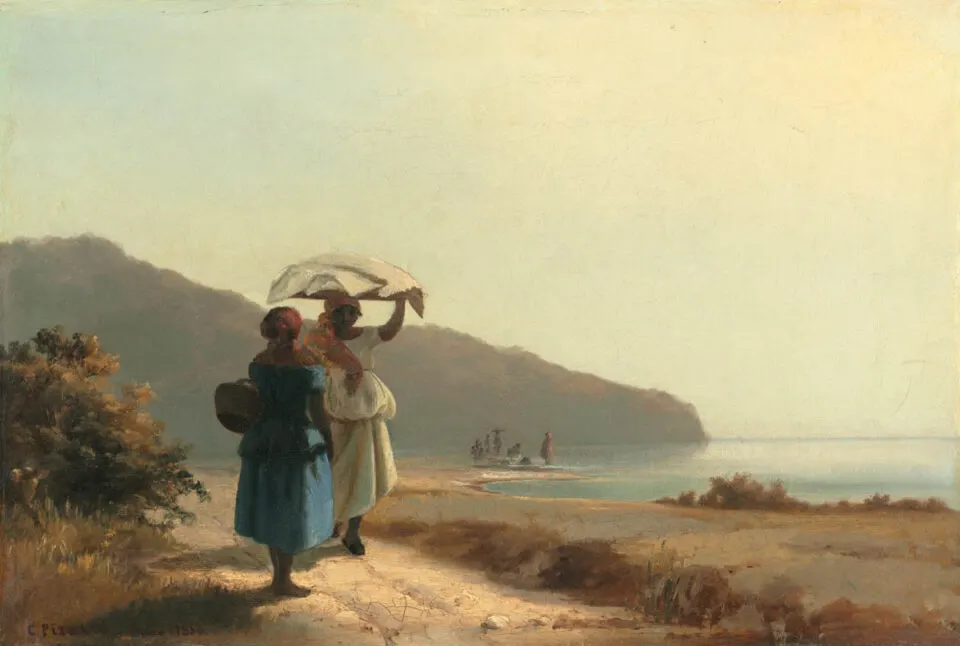

Web Application Development
Clear vision and solve complex problems fast with Product Design Sprints
Autumn is upon us, and it might be time for you to take cue from the trees by shedding the old to make way for the new. This year has been a big one for web design with the rise of the mobile web, an emphasis on usability, and the increasing use of multimedia on websites. Here are some web design trends to keep in mind this fall whether you’re just making a few tweaks, or doing a full overhaul of your website.
The Water Lilies are a series of paintings by Claude Monet, one of the most famous French people, that are famous examples of Impressionist art, an artistic movement led by the painter.

Mona Lisa (also known as La Gioconda or La Joconde) is a 16th-century portrait painted in oil by Leonardo da Vinci during the Renaissance in Florence, Italy.
This colossal oil painting depicts the coronation of Napoleon.Napoleon commissioned it in 1804, and his official painter, Jacques-Louis Davis, began working on it at the end of 1805.

Another remarkable and famous oil painting by Jacques-Louis David, the Death of Marat, was painted in 1793. It is one of the most well-known images of the French Revolution.
The Horse Fair-This French artwork is one of artist Rosa Bonheur’s most famous pieces.It is an oil painting showing the horse market on the Boulevard de l’Opital, where horse dealers sell their horses.

The view is of the shoreline of St. Thomas, where two women stand in conversation. The beach is nearly deserted, and the soft golden background envelops the women.
The Card Players Series-Noted Post-Impressionist painter Paul Cézanne created a series of well-known French paintings depicting card players.